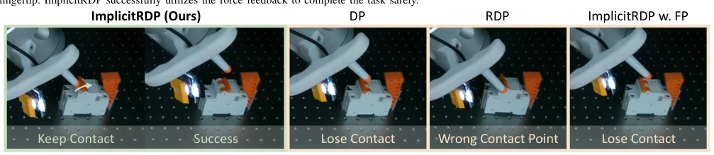
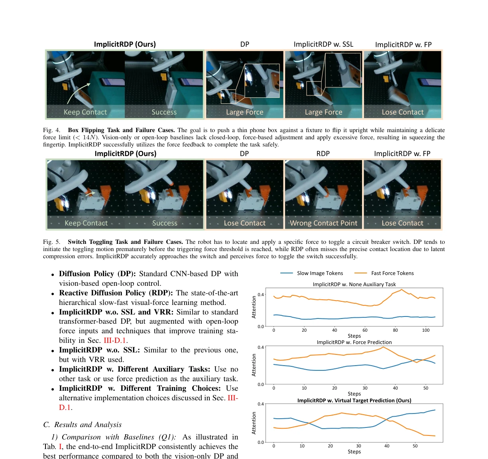
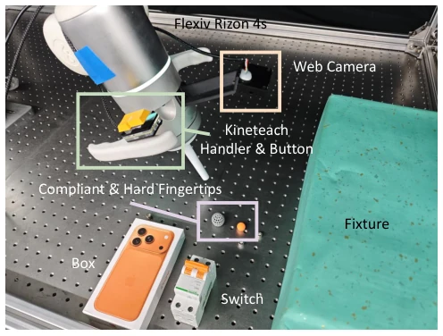

Fig. 1. Structural Slow-Fast Learning: we leverage a temporally causal structure to enable end-to-end closed-loop force-based control within an action chunk. Virtual-target-based Representation Regularization: we further incorporate virtual target prediction as an auxiliary task to prevent modality collapse.
Fig. 2. Network Architecture of ImplicitRDP. We enforce a temporally causal structure using a GRU for force signal encoding and a causal attention mask for action-force interaction, which enables structural slow- fast learning.
Fig. 4. Box Flipping Task and Failure Cases. The goal is to push a thin phone box against a fixture to flip it upright while maintaining a delicate force limit (< 14N). Vision-only or open-loop baselines lack closed-loop, force-based adjustment and apply excessive force, resulting in squeezing the fingertip. ImplicitRDP successfully utilizes the force feedback to complete the task safely.

Fig. 5. Switch Toggling Task and Failure Cases. The robot has to locate and apply a specific force to toggle a circuit breaker switch. DP tends to initiate the toggling motion prematurely before the triggering force threshold is reached, while RDP often misses the precise contact location due to latent compression errors. ImplicitRDP accurately approaches the switch and perceives force to toggle the switch successfully.

Fig. 6. Attention Weight Visualization. We visualize the summed attention weights of visual tokens and force tokens from the first transformer layer in the switch toggling task. The weights are averaged over all heads and all queries. A sliding window of size 10 is applied to smooth the curves.
其他图片Other Figures

Fig. 3. Hardware Setup. The system utilizes a Flexiv Rizon 4s robot arm. A handle and button are mounted between the seventh joint and 6-axis F/T sensor for kinematic teaching. We also design a custom compliant fingertip to ensure distinctive reactivity signals during contact-rich interactions.